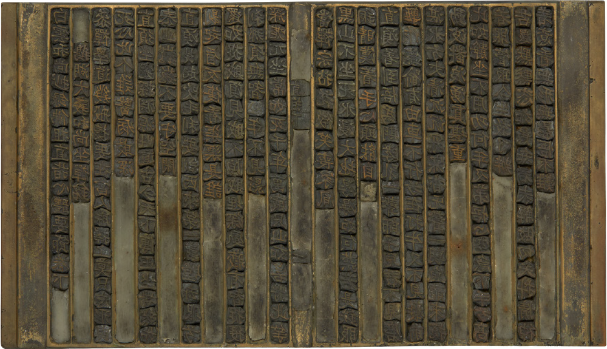

The Evolution of the Book
Handwritten Manuscripts
With the invention of writing, knowledge, observations, and records of daily life were preserved and passed down through hand-copied manuscripts.
Woodblock Printing
As civilization advanced and education flourished, demand grew for books that could be produced in large quantities without errors. This led to the transition from the manuscript era to the age of printed books.
Movable Type Printing
Book production evolved further with movable type, where individual characters were cast, arranged, and typeset to produce printed pages.

Electronic Books
With the advent of smartphones, tablets, and e-readers, books have taken on various digital forms, expanding the ways we read and enriching the reading experience.